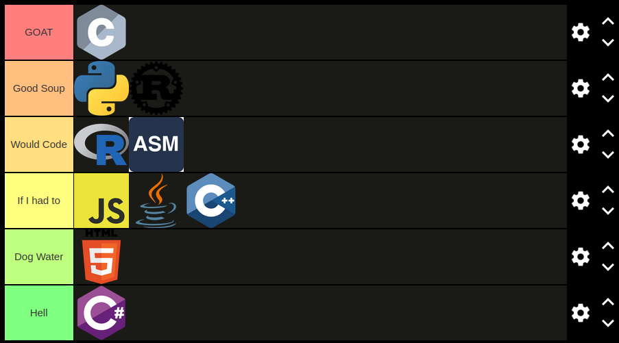
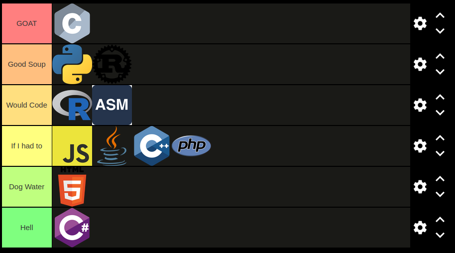

Programming Language Tier List
Very Creative I know
I have seen far too many terrible opinions on this subject and it's time for me to set the record straight.
People like to pretend that their rankings are objective but I won't pretend, I will tell you straight up this is based solely on my personal opinion
(which is better than yours). The list will be separated into 6 categories from best to worst: GOAT, Good Soup, Would Code, If I had to, Dog Water, and last and certainly least: Hell.
Also, I will only rank languages I have used personally. This is because I don't feel comfortable manufacturing an opinion on something I know nothing about.
Python
Python wasn't my first language but, it's my most used to date. This is because of its simple syntax and how effortless it is to work with data. Since I'm forced to work with data often, I usually have a pleasant experience. But, using it for any other purpose, I find myself wanting to switch to literally anything else. This problem is a result of the fact that it is an interpreted language which causes its performance to suffer. But most of the previous complaints are consequences of using a language not best suited for the job. In terms of syntax, it is simple but, I am not a fan of the whole space sensitivity thing. My verdict is putting Python in the Good Soup tier. Even with its flaws, it's still my go-to for data/machine learning.
JavaScript
JavaScript is the web language and I have used it a lot. But, that doesn't mean I like it.
As you probably know, the syntax is really weird which makes writing in it quite painful. It is also very poorly designed in general. What even is the "this" keyword?
I am also biased because I am not a huge fan of web development.
I think JavaScript should go into the If I had to tier because of these reasons.
Java
Java was my second language I ever learned so I hold it in pretty high regard. But, if I had a choice between using Java and the majority of the other languages on this list, I would probably not choose Java. The main reason is the super wordy syntax and forced OOP.
But, I also think it is incredibly overhated. It is still very widely used throughout the industry and I've heard Oracle has made a number of improvements throught the years.
It will never be a first choice, but I wouldn't want to jump off a cliff if I had to use it. So, my final verdict is the If I had to tier.
C
I'll just flat out say it: I love C and it's my favorite language. As much as people complain about its complexity I find it super simple. Whenever I use any other language I think in C if that makes sense.
I also love how low level it is since it allows for more control and speed than anything else on this list. You also won't have to worry about out of date code like in languages like Python or JavaScript, code written 10 years ago still works today.
It also has unlimited possibilities depending on how hard you want to work. For these reasons, C will be my first GOAT tier language.
C++
You would probably expect a higher ranking coming from someone who loves C as much as I do and since it's my first language but I had to put it in the If I had to tier. This is simply because it's not as simple as C and its a lot more bloated.
If I ever feel like I need a class while using C or if I decide to get into game development I'll use C++ but so far that has not happened yet.
C#
Made by Microsoft therefore it is bad. Straight to Hell.
R
I think R gets a lot of unnecessary hate. It is amazing for anything data or statistics related. Just because the language isn't used for the niche you like doesn't mean it sucks.
So, I put it in the Would Code tier.
Rust
Rust is the hot new thing right now and personally I am a fan. Writing in Rust feels great to me because of the syntax, Cargo, safety, and the best mascot.
Unfortunately the whole Rust foundation controversy does make me want to bump it down a tier for the time being. With time and better management it could join C in the GOAT tier.
But for now it's going into the Good Soup tier.
HTML/CSS
I understand that HTML and CSS aren't real languages but I'm still putting them on this list. I don't like either but I do respect the fact that they have a purpose and serve it adequately. At the same time though,
I still don't like using it. Using them is more like styling which isn't "real" programming and it's just not what I enjoy. I would put it in If I had to but I think that is disrespectful to C++ and Java.
To Dog water it goes.
Assembly
I will preface this by saying I have only used x86 and MIPS. I used to hate using Assembly but the more I've used it, the more I appreciate it. I find low level languages and computer engineering incredibly interesting so I am incredibly biased.
For these reasons I'll put it in the Would Code tier.

PHP
The hate for PHP doesn't make any sense to me. In my opinion it's just as annoying to use as JavaScript.
So I'll put it in the If I had to tier.

Lua
I have never used it outside of configuring NeoVim but it's a simple language with nice syntax so it's hard to hate.
Personally I would put it in Would Code in.
Holy C
The big G man's official language. Since it is so holy and based I will be unable to put it on this list. It is on another
plane from the other languages on this list.
Final
This list will be updated as my opinions change. I am still pretty young so I'm sure a lot of what I'm saying here is kind of stupid.